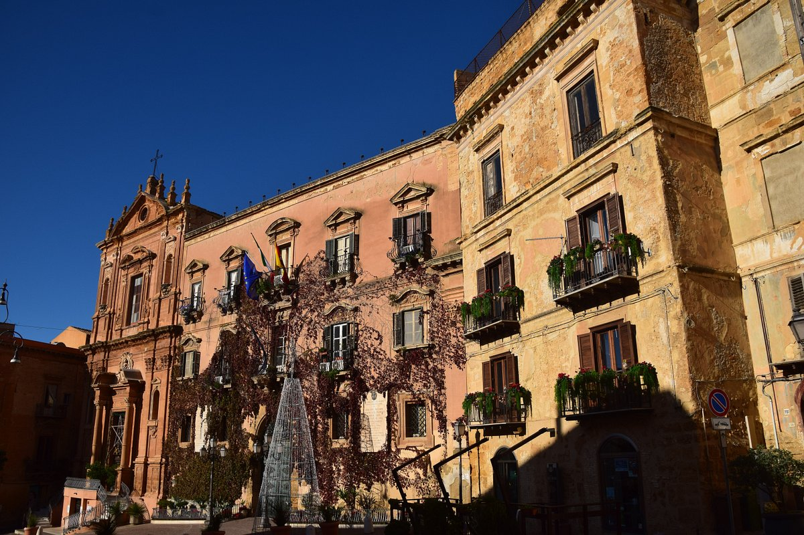

Agrigento — L'ingresso monumentale all'antico borgo collinare.
Dedica illustre al drammaturgo Luigi Pirandello, questa suggestiva piazza fa da cerniera d'ingresso verso l'intricato nucleo di vicoli medievali di Agrigento.

Edificato originariamente nel Seicento come collegio dei Padri Domenicani, l'imponente palazzo domina lo spazio urbano ed è l'attuale sede del Comune di Agrigento.
Collocato all'interno del complesso del Palazzo dei Giganti, questo storico teatro ottocentesco ricalca lo stile del celebre Teatro San Carlo di Napoli nei suoi interni dorati.
Adiacente al palazzo municipale, la chiesa arricchisce la piazza con la sua magnifica scalinata d'accesso a forbice e una facciata sobria in calda pietra arenaria.
Dalla piazza si snodano le caratteristiche scalinate e le strette vie di origine araba e normanna, che salgono arrampicandosi verso la soprastante Cattedrale di San Gerlando.